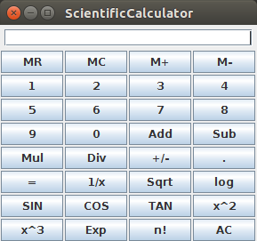

| Prev | Next |
Java Swing Framework
Java Swing library provides a set of classes for developing applications with GUI.
Step 1: Swing Tutorial
A simple tutorial to learn Swing basics is given in Java Swing Tutorial. As a first step read this tutorial and try the programs to get familiar with writing Swing programs. This tutorial is created by Sudheer (dovari.sudheerkiran@gmail.com) and can also be accessed here.
Step 2: Understand the Calculator application
Once you are decently comfortable (you don't have to become an expert really, you become an expert only over a period of time), try to get a hang of the the calculator program ScientificCalculator.java. When compiled and executed, this program shows the following UI.
- 
One can now press the buttons and perform various computations on numbers.
Try to tweak the program by adding one or two buttons, changing few labels, changing the size, etc.
Step 3: Transform the Calculator application
Once you get the hang, start transforming the calculator program to perform computations with 2D Points instead of numbers. Add can be used to add two Point objects. Mul can be used to support scalar multiplication.
- Firstly, change the button labels to suit the operations supported on points. Sub, Div, Sqrt, log, etc don't make sense for point manipulation. Instead change those labels to euclidean distance, manhattan distance, slope, equals, orientation, x-projection, y-projection, x-reflection, y-reflection, etc.
- Change the implementation of the corresponding methods to perform computation on points instead of numbers. For example, if you input (1,3), press +, input (2,-1) and press = the calculator should display (3,2).
- You need to add one button each for '(', ')' and comma to be able to type (1,3) + (2,-1).
- In case format is not correct, define and throw custom exceptions. You can also catch them and display appropriate message through a dialog box.
- Include comments in the source code to describe what each method does.
- Try to make the working foolproof. i.e. it is able to handle all kinds of errors from input to computation to output in a graceful manner. The user should not experience unpleasent surprises.
RULES TO REMEMBER AND PRACTICE
1. Do one change at a time (however trivial it might be), make sure the program compiles, runs and the intended change works correctly before doing the next one.
2. Seek help only after trying enough from your part. The help should be restricted to getting some clues to think in the right direction. Don't ever attempt to copy.
3. Don't try something - be it syntax or a language feature - that you don't understand in the first place. This doesn't help and has an adverse effect on your learning. First understand at least a bit before trying.
4. Don't rely only on the lab hours alone. You will surely not have enough of them to do all this. Use the holidays to complete this.
IMPORTANT: You should submit the completed Points Calculator application by Sep 30th in AUMS.
You may also use Swing_Cheatsheet.pdf for quick reference.